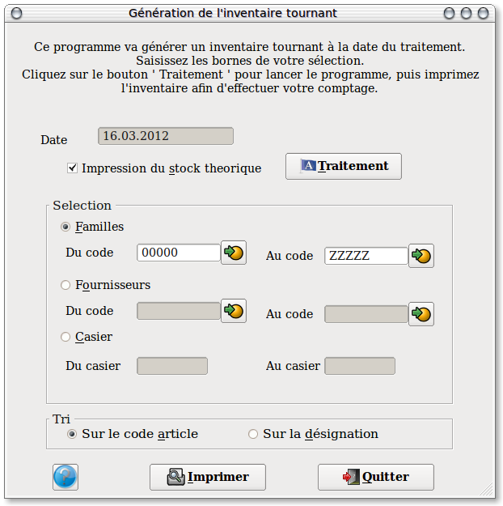

~ Comptabilité & facturation Laurux ~

~ Comptabilité & facturation Laurux ~ |
|
|
|

Par defaut, la date proposée est celle du jour et ne peut pas etre modifiée .
Vous pouvez choisir l'ordre de tri de l'impression de l'inventaire, par
famille ou par fournisseur. Vous pouvez également choisir d'imprimer un
inventaire faisant apparaitre les quantités théorique du stock au jour
de la génération.
Vous pouvez effectuer une selection sur une série de famille ou de
fournisseur en cliquant sur le bouton idoine puis en saisissant la
valeur inférieure et supérieure.
Cliquer sur le bouton "Traitement" pour lancer la génération de l'inventaire, puis cliquer sur le bouton "Imprimer" pour lancer l'impression du document qui vous servira pour la saisie.
----------------------------------------------------------------------------------------------------------------------